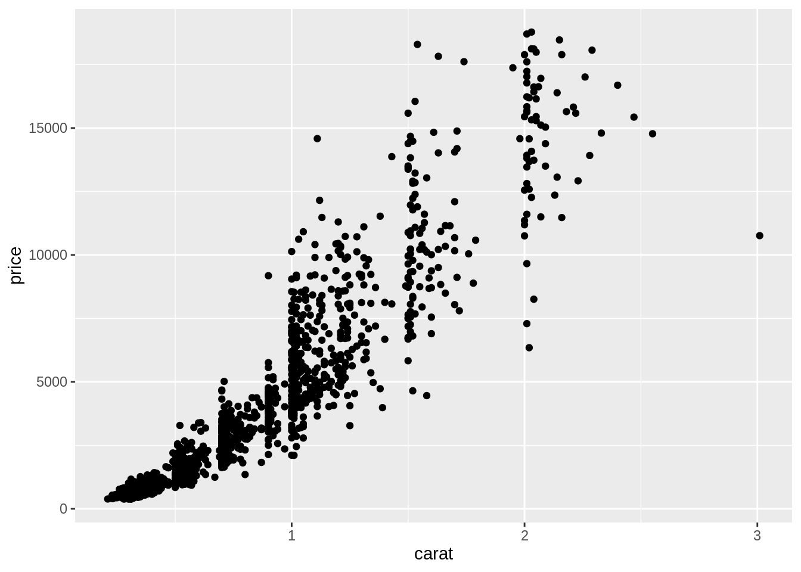
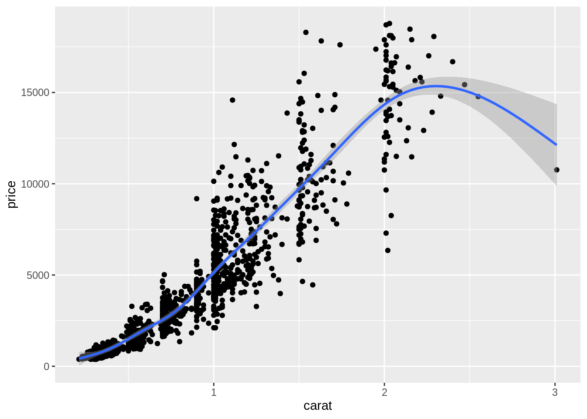
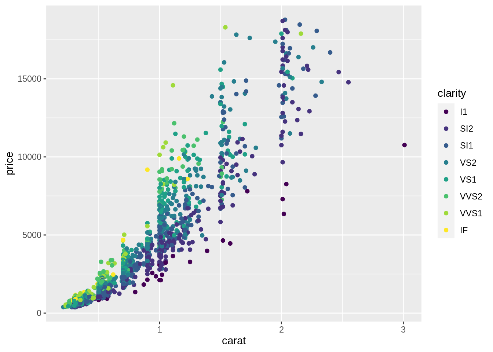
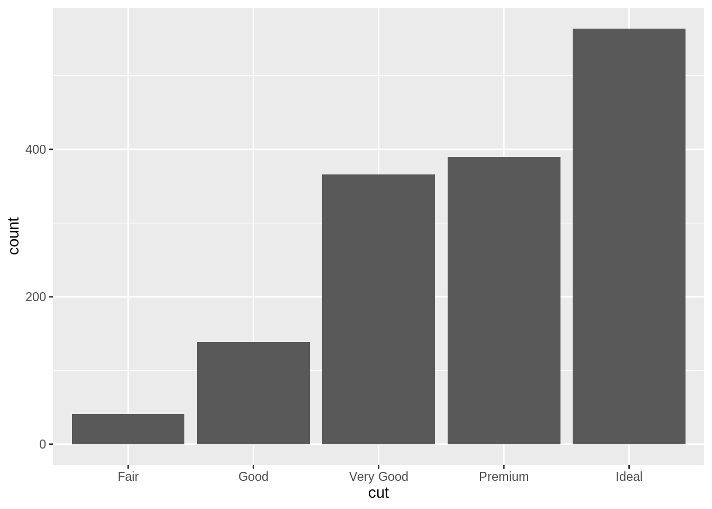
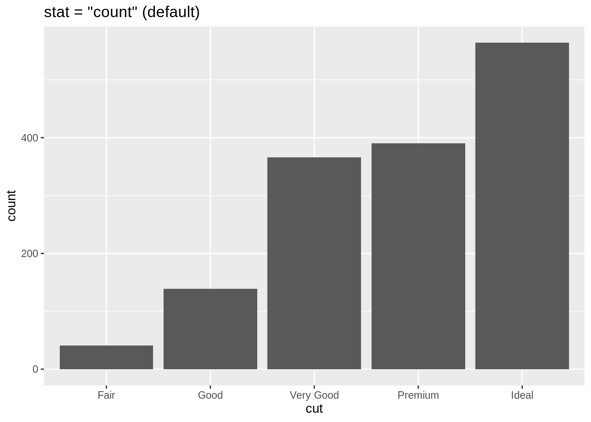
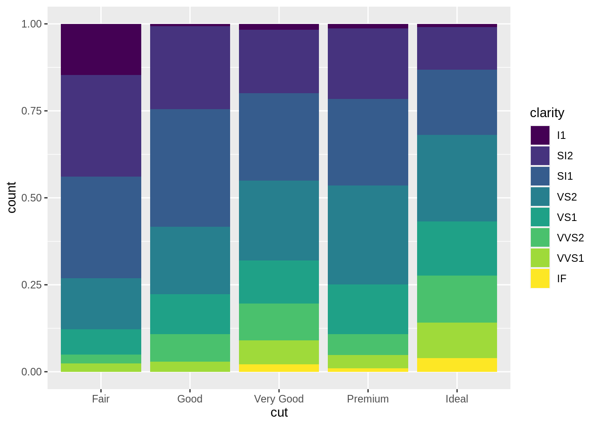
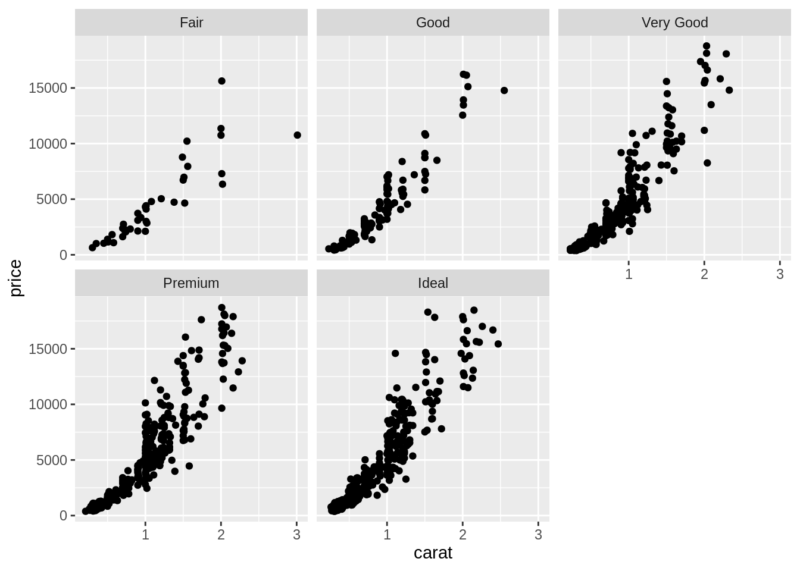
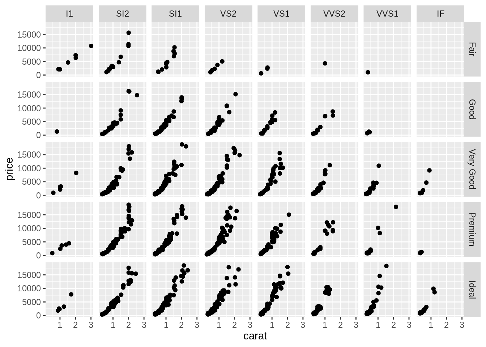
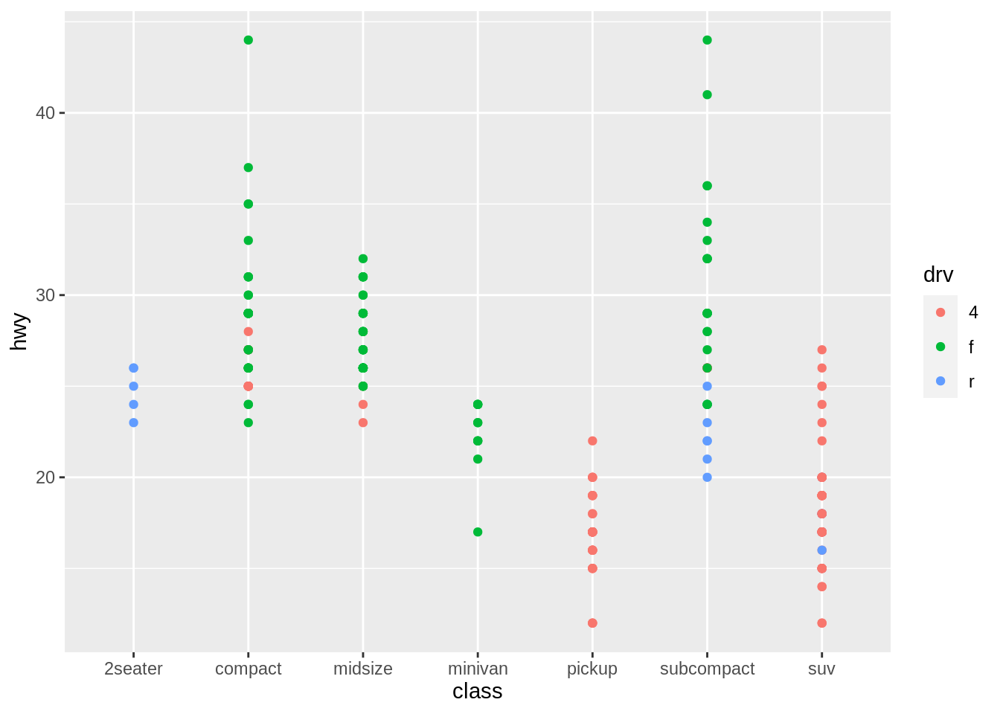

5 視覺化：ggplot2
(投影片 /
影片)
Some of the material is based on Garrett Grolemund’s introduction to ggplot2
5.1 R 的繪圖系統
眾所皆知，R 語言的繪圖能力非常強大。相較其它統計套裝軟體，R 讓使用者能對圖的細部做許多調整，甚至去創造出獨特的圖片 (i.e. 不屬於傳統統計圖範疇內的圖)。
但隨著強大繪圖功能伴隨而來的便是異常複雜的繪圖函數。傳統的 R 即擁有很厲害的繪圖系統：base R graphics 與 lattice 套件皆是功能非常強大的繪圖系統，但其學習曲線也相當陡峭，因此，實習課僅會介紹 ggplot2 這個較易上手 (但功能仍相當強大) 的繪圖系統 (套件)。
5.2 今天用到的資料: diamonds
-
diamonds是ggplot2套件的內建資料。這筆資料記錄著 5 萬多筆鑽石的售價以及各種資訊。可使用?diamonds閱讀此資料各變項的說明。
| carat | cut | color | clarity | depth | table | price | x | y | z |
|---|---|---|---|---|---|---|---|---|---|
| 0.23 | Ideal | E | SI2 | 61.5 | 55 | 326 | 3.95 | 3.98 | 2.43 |
| 0.21 | Premium | E | SI1 | 59.8 | 61 | 326 | 3.89 | 3.84 | 2.31 |
| 0.23 | Good | E | VS1 | 56.9 | 65 | 327 | 4.05 | 4.07 | 2.31 |
| 0.29 | Premium | I | VS2 | 62.4 | 58 | 334 | 4.20 | 4.23 | 2.63 |
| 0.31 | Good | J | SI2 | 63.3 | 58 | 335 | 4.34 | 4.35 | 2.75 |
| 0.24 | Very Good | J | VVS2 | 62.8 | 57 | 336 | 3.94 | 3.96 | 2.48 |
因為 diamonds 相當龐大，為減少運算時間，這裡從 diamonds 抽出 1500 筆資料儲存於 diam
5.3 Template 1
-
最基本的 ggplot 模板：
ggplot(data = <DATA>) + <GEOM_FUNCTION>(mapping = aes(<MAPPINGS>)) -
使用模板繪製散布圖：
Figure 5.1:
ggplot()的結構
5.3.1 散布圖 (Scatter plot)
-
使用下方程式碼，可繪製出鑽石的重量 (克拉) 與價錢 (美元) 的關係 (散布圖)
library(ggplot2) ggplot(data = diam) + geom_point(mapping = aes(x = carat, y = price))
5.4 圖層
- 在 ggplot 的概念中，圖片是由一層層的圖層堆疊起來的：
-
第一層 (
ggplot()) 是底圖 (初始化繪圖函數)。在這層定義的內容 (e.g.data) 可被之後的圖層使用。ggplot(data = diam) # 底層
-
第二層 (
geom_point()) 畫在底圖之上。圖層之間以+連結起來,要將第一與第二層連起來，得在繪製第一層圖層的程式碼之後加上一個+：ggplot(data = diam) + # 底層 geom_point(mapping = aes(x = carat, y = price)) # 第二層
-
如果想增加其它圖層，只要再繼續使用
+:ggplot(data = diam) + # 底層 geom_point(mapping = aes(x = carat, y = price)) + # 第二層 geom_smooth(mapping = aes(x = carat, y = price)) # 第三層
-
5.5 Mapping: 將資料對應至視覺屬性
要能繪製統計圖，必須先將抽象的資料 (i.e. data frame) 對應至實際可見的視覺屬性上 (e.g. 位置、形狀、大小、顏色、透明度等) 。不同的統計圖，所需的「資料與視覺屬性間的對應關係」就不同。
要繪製一個散布圖，我們必須將 data frame 中的一個變項對應至 x 軸、另一個變項對應至 y 軸，以將 data frame 中的每筆觀察值 (抽象資料) 轉換成圖上的一個個點 (視覺屬性)
-
geom_*()中的參數mapping，即在定義「data frame 中的資料與統計圖上之視覺屬性的關係」：ggplot(data = diam) + geom_point(mapping = aes(x = carat, y = price, color = clarity))- 在
aes()裡面定義資料與視覺屬性間的關係-
x = carat: 將diam中的變項carat對應至散布圖的 x 軸 -
y = price: 將diam中的變項price對應至散布圖的 y 軸 -
x與y會共同決定一個點的位置 -
color = clarity: 將diam中的變項clarity對應至散布圖上點的顏色
-
- 在
Figure 5.2: Aesthetic Mappings
5.6 長條圖 (Bar chart)
-
概念上，繪製長條圖與繪製散布圖是很不一樣的：
- 散布圖上的視覺屬性可以直接對應到 data frame 裡的資料
- 長條圖的視覺屬性 (bar 的長度) 無法直接對應到 data frame 裡的資料。它對應到的是由 data frame 裡的資料經過彙整的結果:
- x 軸上是某變項裡的各個類別組成的
- y 軸代表各個類別出現的次數
-
geom_bar()是用來繪製長條圖的函數。在定義mapping時，只需將 data frame 的某個變項 (通常為類別變項) 對應至x，geom_bar()即會自動依據此變項計算出各類別的次數。換言之，在生成的長條圖中，y 軸 (count) 並非 data frame 的變項，而是geom_bar()幫你計算出來的東西，因此在定義 mapping 時，不需定義變項與 y 軸間的 mapping。 -
geom_bar()在繪製長條圖之前，為符合繪圖需求而將傳入的 data frame 進行的運算，稱為 Statistical Transformation:![`geom_bar()`'s default statistical transformation[^src]](assets/img/visualization-stat-bar.png)
Figure 5.3:
geom_bar()’s default statistical transformation13
5.7 Statistical Transformations
-
有時候，我們只能拿到已整理好的資料，換言之，我們無法從
x裡面去計算出裡面各類別的次數 (count)，例如sum_data已儲存著cut當中各類別的次數 (count)：#> # A tibble: 5 x 2 #> cut count #> <ord> <int> #> 1 Fair 41 #> 2 Good 139 #> 3 Very Good 366 #> 4 Premium 390 #> 5 Ideal 564 如果想使用
sum_data之中的變項直接去畫出長條圖，就需要覆寫 「geom_bar()自動從x計算出次數」的預設行為。這個行為可由geom_bar()的stat參數進行設定。geom_bar()的stat預設值是"count"，讓geom_bar()可以從「對應至x的變項」計算出此變項裡各類別的次數。-
若不想自動進行這種計算，而想直接使用 data frame 本身的變項，則可以將
stat設為"identity"，此時便可以在mapping中直接將 data frame 的變項對應至長條圖的 x 軸 與 y 軸：# stat = "identity" ggplot(data = sum_data) + geom_bar(mapping = aes(x = cut, y = count), stat = "identity") + labs(title = 'stat = "identity"') # stat = "count" (geom_bar 預設) ggplot(data = diam) + geom_bar(mapping = aes(x = cut), stat = "count") + labs(title = 'stat = "count" (default)')
5.7.1 geom_*() 與 stat 預設
- 所有的
geom_*()函數都會有一個stat的預設值：-
geom_point()預設stat = "identity"，所以給定x與y兩個 mapping，便會將 data frame 中的變項對應至圖上的 x 軸與 y 軸。 -
geom_bar()預設stat = "count"，會從對應至x的變項中計算出該變項各個類別的次數，並將此次數繪於圖上的 y 軸
-
5.8 Position Adjustments
- 透過提供第二個 mapping,
fill,geom_bar能夠將每個長條再依據第二個類別變項進行細分。

# position: stack (default)
ggplot(data = diam) +
geom_bar(aes(x = cut, fill = clarity),
position = "stack")
# position: fill
ggplot(data = diam) +
geom_bar(aes(x = cut, fill = clarity),
position = "fill")
# postion: dodge
ggplot(data = diam) +
geom_bar(aes(x = cut, fill = clarity),
position = "dodge")
5.9 Template 2
ggplot(data = <DATA>) +
<GEOM_FUNCTION>(
mapping = aes(<MAPPINGS>),
stat = <STAT>,
position = <POSITION>
)5.10 Facet
-
1 個類別變項
ggplot(data = diam) + geom_point(aes(x = carat, y = price)) + facet_wrap(vars(cut)) -
2 個類別變項
ggplot(data = diam) + geom_point(mapping = aes(x = carat, y = price)) + facet_grid(rows = vars(cut), cols = vars(clarity))
5.11 Template 3
ggplot(data = <DATA>) +
<GEOM_FUNCTION>(
mapping = aes(<MAPPINGS>),
stat = <STAT>,
position = <POSITION>
) +
<FACET_FUNCTION>5.12 Geoms
ggplot(mpg) +
geom_point(aes(class, hwy))
#ggsave('mpg_class_hwy_point.png', width = 14, height = 12, units = 'cm')
ggplot(mpg) +
geom_boxplot(aes(class, hwy))
#ggsave('mpg_class_hwy_boxplot.png', width = 14, height = 12, units = 'cm')
ggplot(mpg) +
geom_point(aes(class, hwy, color = drv))
#ggsave('mpg_class_hwy_color.png', width = 16, height = 12, units = 'cm')
參考資源 (務必閱讀)
- Wickham, H., & Grolemund, G. (2017). R for Data Science: Data visualisation